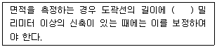
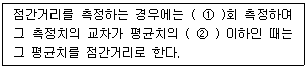
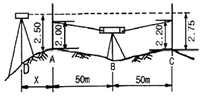
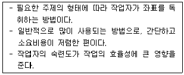
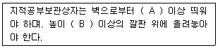

지적산업기사 (2009-05-10 기출문제)
1과목: 지적측량
1. 전파기방법에 의하여 다각망도선법으로 지적삼각보조측량을 하는 때에 “1도선”의 의미를 가장 옳게 설명한 것은?
- 기지점과 교점간 또는 교점과 교점간을 말한다.
- 기지점과 기지점간만을 말한다.
- 기지점과 교점간만을 말한다.
- 교점과 교점간만을 말한다.
(정답률: 알수없음)

2. 다음 중 경계복원측량을 가장 잘 설명한 것은?
- 지적도상 경계의 수정을 위한 측량이다.
- 경계점을 지표상에 복원하기 위한 측량이다.
- 지상의 토지구획선을 지적도에 등록하기 위한 측량이다.
- 지적도 도곽선에 걸쳐 있는 필지를 도곽선 안에 제도하기 위한 측량이다.
(정답률: 73%)
3. 다음 중 지적측량을 하여야 하는 경우가 아닌 것은?
- 지적공부의 복구에 측량을 필요로 하는 경우
- 축척변경에 측량을 필요로 하는 경우
- 토지의 합병에 측량을 필요로 하는 경우
- 토지의 분할에 측량을 필요로 하는 경우
(정답률: 알수없음)
4. 100m 길이의 줄자를 검측장에 설치된 표준길이와 비교 검측한 결과 99.85m가 나왔다면 이 줄자의 보정계수는?
- 0.9985
- 0.9999
- 1.0001
- 1.0015
(정답률: 알수없음)
5. 다각망도선법에 의하여 변수가 5변인 1도선의 관측각을 측정하여 합한 값이 716˚ 55′ 10″ 이고 출발기지방위각이 46˚ 31′ 18″ 일 때, 이 도선의 관측방위각은?
- 43˚ 26′ 28″
- 170˚ 23′ 52″
- 243˚ 26′ 28″
- 350˚ 23′ 52″
(정답률: 50%)
6. 경위의 측량방법에 의한 세부측량시 축척변경시행지역의 측량결과도는 얼마의 축척으로 작성하여야 하는가?
- 1/500
- 1/1000
- 1/1200
- 1/6000
(정답률: 알수없음)
7. 면적측정과 관련한 아래 설명에서 ( ) 안에 들어갈 알맞은 수치는?

- 0.01
- 0.⑤
- 0.1
- 0.5
(정답률: 알수없음)
8. 지적도근점의 관측 및 계산에서 거리측정방법에 대한 아래 설명의 (①)과 (②)에 들어갈 말이 모두 옳은 것은?

- ① : 2, ② : 3천분의 1
- ① : 1, ② : 3천분의 1
- ① : 1, ② : 2천분의 1
- ① : 2, ② : 2천분의 1
(정답률: 67%)
9. 광파기측량방법과 다각망도선법에 의한 지적삼각보조점의 관측에 있어 도선별 평균방위각과 관측방위각의 폐색오차 한계는? (단, n은 폐색변을 포함한 변의 수를 말한다.)
- ±√n초 이내
- ±1.5√n초 이내
- ±10√n초 이내
- ±20√n초 이내
(정답률: 70%)
10. 다각망도선법에 의한 지적삼각보조점의 관측에 있어, 도선별 연결오차는 얼마 이하로 하여야 하는가? (단, S는 도선의 거리를 1000으로 나눈 수를 말한다.)
- 0.5 × S 미터 이하
- 0.⑤ × S 미터 이하
- 5 × S 미터 이하
- 50 × S 미터 이하
(정답률: 34%)
11. 다음 중 도해지적측량의 단점에 대한 설명이 옳지 않은 것은?
- 항공사진측량을 이용한 간접적인 작성이 불가능하다.
- 축척의 크기에 따라 허용오차가 다르다.
- 도면의 신축방지와 보관관리가 용이하지 않다.
- 수치지적측량에 비해 정도가 떨어진다.
(정답률: 알수없음)
12. 경위의 측량방법에 의하여 다각망도선법으로 지적도근측량을 하는 때에 1도선의 점의 수는 최대 얼마 이하로 하여야 하는가?
- 10개 이하
- 20개 이하
- 30개 이하
- 40개 이하
(정답률: 알수없음)
13. 지적도의 축척이 1/600인 지역에 등록된 필지의 면적이 50.55m2 일 때 지적공부에 등록하는 결정면적은?
- 50m2
- 50.5m2
- 50.6m2
- 51m2
(정답률: 알수없음)
14. 지적도 축척이 1/1200인 지역에서 측판측량방법으로 세부측량을 시행할 경우 도상에 영향을 미치지 아니하는 지상거리의 허용범위는?
- 12mm 이하
- 60mm 이하
- 100mm 이하
- 120mm 이하
(정답률: 알수없음)
15. 다음 오차의 종류 중 최소제곱법에 의하여 오차를 보정할 수 있는 것은?
- 누적오차
- 착오
- 정오차
- 우연오차
(정답률: 알수없음)
16. 다음 중 동부ㆍ중부ㆍ서부원점을 사용하지 아니하는 대통령령이 정하는 지역에서의 지적측량 원점에 속하지 않는 것은?
- 율곡원점
- 금산원점
- 망향원점
- 조본원점
(정답률: 알수없음)
17. 다음 중 도면의 등사에 관한 설명이 옳지 않은 것은? (단, 지적사무처리규정에 따름)
- 도면을 등사하고자 하는 때에는 가급적 도면을 비닐 보호대에 넣은 상태에서 등사하고 등사가 완료된 때는 소관청의 검사인을 받아야 한다.
- 측량대상토지가 도곽선에 걸치거나 인접되어 있는 경우 반드시 도곽선은 전부 등사하여야 한다.
- 등사용지는 측량준비도 작성과정에서 신축이 발생되지 않도록 질이 좋고 충분히 건조된 용지를 사용한다.
- 도곽선의 신축량 및 보정계수는 도면에서 산출한다.
(정답률: 28%)
18. 경위의 측량방법에 의한 세부측량의 관측 기준에 대한 설명이 옳은 것은?
- 수평각의 관측은 3대회의 방향관측법에 의한다.
- 수평각의 관측은 2배각의 배각법에 의한다.
- 연직각의 관측은 정반으로 2회 관측하여 그 교차가 5분 이내인 때에는 그 평균치를 연직각(분단위)으로 한다.
- 관측은 30초독 이상의 경위의를 사용한다.
(정답률: 알수없음)
19. 도면작성시 제도하여 등록하는 각종 선의 폭 기준이 옳지 않은 것은? (단, 지적사무처리규정에 따름.)
- 경계 : 0.1mm
- 시ㆍ군 행정구역선 : 0.4mm
- (도면에 등록하는) 도곽선 : 0.2mm
- 동ㆍ리 행정구역선 : 0.2mm
(정답률: 알수없음)
20. 다음 중 지적도근측량에서 지적도근점의 도선 형태에 해당되지 않는 것은?
- 결합도선
- 왕복도선
- 개방도선
- 폐합도선
(정답률: 70%)
2과목: 응용측량
21. 등고선의 간접 측정방법이 아닌 것은?
- 사각형 분할법 (좌표점법)
- 기준점법 (종단점법)
- 원곡선법
- 횡단점법
(정답률: 알수없음)
22. 원곡선 설치에서 교각 I = 70˚, 반지름 R = 100m 일때 접선길이는?
- 50.0m
- 70.0m
- 86.6m
- 259.8m
(정답률: 59%)
23. 고도 2500m의 비행기에서 초점거리 188.7mm의 사진기로 촬영한 수직공중사진의 축척은 약 얼마인가?
- 1/13000
- 1/18000
- 1/23000
- 1/28000
(정답률: 알수없음)
24. 다음 중 완화곡선에 사용되는 곡선형태가 아닌 것은?
- 2차 포물선
- 3차 포물선
- 렘니스케이트
- 클로소이드
(정답률: 알수없음)
25. 300m 떨어진 곳에 표척을 세우고 기포가 중앙에 있을 때와 기포가 4눈금 이동했을 때의 양쪽을 읽어 그의 차를 0.08m라 할 때 이 기포관의 감도는?
- 12″
- 14″
- 16″
- 18″
(정답률: 알수없음)
26. 곡률반지름 R인 원곡선의 곡선거리 ℓ에 대한 편각은?
- ℓ / 2R
- 2ℓ / R
- ℓ2 / 2R
- 2ℓ / R2
(정답률: 알수없음)
27. 다음 사항에서 항공사진의 특수3점에 속하지 않는 것은?
- 등각점
- 교회점
- 연직점
- 주점
(정답률: 알수없음)
28. GPS의 거리 관측 방법은 무엇인가?
- 전파의 도달시간 이용
- 전파의 샤임플러그 효과
- 공면 조건의 원리
- 라이다 측위 원리
(정답률: 50%)
29. 터널의 중심선을 천정에 설치하여 갱내 수준측량을 실시하였다. 기계를 세운 A점의 후시는 -1.00m, 표척을 세운 B점의 전시는 -1.50m, 사거리 50m, 연직각 +15˚ 일 때 두점간의 고저차는?
- 13.44m
- 15.54m
- 17.54m
- 19.54m
(정답률: 알수없음)
30. 축척 1 : 25000인 지형도에서 A점의 표고는 80m이고, B점의 표고는 140m 이며 두 점 간의 거리가 도상에서 15.7cm일 때 경사는?
- 1/63.2
- 1/65.0
- 1/65.2
- 1/65.4
(정답률: 알수없음)
31. 다음 중 단일 촬영경로(strip)의 입체모델 수가 12개일 때 필요한 최소 표정점 수는?
- 3점
- 8점
- 13점
- 18점
(정답률: 알수없음)
32. 우리나라 1:50000 지형도에서 조곡선의 간격은?
- 5m
- 10m
- 20m
- 100m
(정답률: 59%)
33. 측량기의 조정법중 항정법으로 기계를 검사한 결과 그림에서 c에서의 조정량 0.⑤2m얻었다면 AD간의 거리 x는?

- 2m
- 3m
- 4m
- 5m
(정답률: 알수없음)
34. 다음 중 항공사진의 판독만으로 구별하기 가장 어려운 것은?
- 능선과 계곡
- 밀밭과 보리밭
- 도로와 철도선로
- 침엽수와 활엽수
(정답률: 55%)
35. 노선의 곡률반경 R = 230m, 곡선장 L = 18m일 때 클로소이드의 매개변수 A의 값은?
- 12.78m
- 25.66m
- 51.12m
- 64.34m
(정답률: 37%)
36. 우리나라의 고저기준점에 대한 설명으로 맞는 것은?
- 해수면의 최고수위를 기준으로 높이를 구하여 놓은 점
- 기준수준면으로부터의 높이를 구하여 놓은 점
- 기준타원체면으로부터의 높이를 구하여 놓은 점
- 지표면으로부터의 높이를 구하여 놓은 점
(정답률: 알수없음)
37. 고도 5000m의 높이에서 촬영한 공중사진이 있다. 주점기선장이 10cm, 철탑 시차차가 2mm라면 이 철탑의 높이는?
- 80m
- 90m
- 100m
- 110m
(정답률: 54%)
38. 다음 항공사진측량용 사진기 중 피사각이 90° 정도로 일반도화 및 판독용으로 많이 사 용하는 것은?
- 보통각사진기
- 광각사진기
- 초광각사진기
- 협각사진기
(정답률: 알수없음)
39. GPS 측량시 유사거리에 영향을 주는 오차와 거리가 먼 것은?
- 위성시계의 오차
- 위성궤도의 오차
- 전리층의 굴절 오차
- 지오이드의 변화
(정답률: 알수없음)
40. 클로소이드 곡선에 대한 설명으로 틀린 것은?
- 고속도로의 적용에 가장 적합하다.
- 곡률이 곡선의 길이에 비례한다.
- 완화곡선의 일종이다.
- 철도의 종단곡선 설치에 효과적이다.
(정답률: 알수없음)
3과목: 토지정보체계론
41. 다음 중 지적정보로 볼 수 없는 것은?
- 지번
- 면적
- 소유자
- 도로중심선
(정답률: 60%)
42. 스캐닝(scanning)에 의하여 도형정보(지적도)를 입력할 경우의 장점에 대한 설명으로 옳지 않은 것은?
- 작업자의 수작업이 최소화되다.
- 이미지상에서 삭제・수정할 숭 있어 작업 능률이 놓다.
- 원본 도면의 손상된 정도와 상관없이 도면을 정확하게 입력할 수 있다.
- 복잡한 도면을 입력할 때에 작업시간을 단축할 수 있다.
(정답률: 70%)
43. 공간정보의 분석기능 중 서로 다른 자료층에 나타난 형상들의 정보를 종합 분석하여 각종 관련 정보를 해석 또는 제공하는 것은?
- 중첩분석
- 표면분석
- 근접분석
- 경사분석
(정답률: 알수없음)
44. 토지정보시스템(LIS)의 질의어(query language)에 대한 설명이 옳지 않은 것은?
- 질의어란 사용자가 필요한 정보를 데이터베이스에서 추출하는데 사용되는 언어를 말한다.
- 질의를 위하여 사용자가 데이터베이스의 구조를 알아 하는 언어를 과정 질의어(procedural query language)라 한다.
- SQL은 비과정 질의어의 대표적인 예이다.
- 계급형(hierarchical)과 관계형(relational) 데이터베이스 모형은 사용하는 질의를 위해 데이터베이스의 구조를 알아야 한다.
(정답률: 알수없음)
45. 지적전산자료관리책임관은 지적전산자료의 이용실태를 최소 얼마의 주기로 확인하도록 규정하고 있는가?
- 매주 1회 이상
- 매월 1회 이상
- 매년 1회 이상
- 2년마다
(정답률: 알수없음)
46. 지적법에 의하여 구축된 지적정보센터의 토지관련 자료가 아닌 것은?
- 지적전산자료
- 건축물대장전산자료
- 공시지가전산자료
- 주민등록전산자료
(정답률: 46%)
47. 지적전산 프로그램을 지적부서가 아닌 부서에 설치하고자 하는 때에는 누구의 승인을 얻어야 하는가?
- 구청장
- 도지사
- 행정안전부장관
- 지적전산자료관리책임관
(정답률: 50%)
48. 다음 중 관계형 데이터베이스에 대한 설명으로 가장 옳은 것은?
- 트리 구조와 같은 계층형 구조를 가지고 있다.
- 정의된 데이터 테이블의 갱신이 어려운 편이다.
- 데이터를 2차원의 테이블 형태로 저장한다.
- 필요한 정보를 추출하기 위한 질의의 형태에 많은 제한을 받는다.
(정답률: 알수없음)
49. 다음 중 메타데이터(Metadata)에 대한 설명으로 옳지 않은 것은?
- 데이터의 내용, 품질, 조건 및 특징 등을 저장한다.
- 데이터의 지속적인 업데이트에 중요하다.
- 데이터의 원활한 교환을 위한 틀을 제공한다.
- 데이터의 논리적 규약을 물리적 수준으로 전환시킨다.
(정답률: 59%)
50. 국가지리정보체계기본계획은 몇 년 단위로 수립・시행 하여야 하는가?
- 10년
- 5년
- 3년
- 매년
(정답률: 42%)
51. 토지정보시스템의 구성요소 중, 각종 정보의 입력・관리・분석 및 처리・편집 등의 기능을 필요로 하며 사용자가 이용하는 장치들에서 구동되는 각종 컴퓨터 프로그램들을 의미하는 것은?
- 조직
- 인력
- 소프트웨어
- 하드웨어
(정답률: 60%)
52. 지적도면을 스캐닝 한 결과로 나타나는 격자구종에 대한 설명으로 옳은 것은?
- 격자구조는 별도의 작업없이 좌표값을 갖는다.
- 격자구조는 데이터의 구조가 복잡하다.
- 격자구조의 정확도는 격자의 면적에 비례한다.
- 격자의 크기가 작을수록 저장되는 자료양은 많아진다.
(정답률: 42%)
53. 지적전산자료의 이용 및 사용료에 관한 설명이 옳지 않은 것은?
- 지적공부에 관한 전산자료를 이용 또는 활용하고자 하는 자는 이에 대한 관계 중앙행정기관의 장의 심사를 거치지 않고 소관청의 승인을 얻으면 된다.
- 시・군・구 단위의 지적전산자료를 이용하고자 하는 자는 소관청의 승인을 얻어야 한다.
- 전국 단위의 지적전산자료를 이용하고자 하는 자는 국토해양부장관의 승인을 얻어야 한다.
- 시・도 단위의 지적전산자료를 이용하고자 하는 자는 시・도지사의 승인을 얻어야 한다.
(정답률: 20%)
54. 지리정보 분야의 국제표준화기구로 1994년 6월에 구성되었으며, 수치로 된 지리정보 분야에 대한 표준화를 다루는 기술위원회로 구성된 기구는?
- CEN/TC287
- ISO/TC211
- OGC
- OGF
(정답률: 알수없음)
55. 우리나라 NGIS의 데이터 교환 표준으로 정해진 것은?
- IGES
- SDTS
- STEP
- TIGER
(정답률: 50%)
56. 토지정보시스템(Land Information System)의 구축효과의 거리가 먼 것은?
- 지적업무 처리의 능률성과 정확도 향상
- 민원인의 편의 증진
- 지적서고의 확장
- 수작업으로 인한 오류방지
(정답률: 43%)
57. 효율적인 자료관리와 중복성 방지를 위한 시스템으로서, 안정적으로 자료를 관리하고 효율적인 검색 및 질의 언어를 지원하는 것을 주요 기능으로 하는 것은?
- LMIS
- DMBS
- EPP
- MAJIS
(정답률: 알수없음)
58. 벡터데이터의 위상구조(topology)를 통해 알 수 있는 공간 객체들 간의 분석 내용으로 거리가 먼 것은?
- 연결성
- 중첩성
- 인접성
- 포함성
(정답률: 40%)
59. 다음 중 아래와 같은 특징을 갖는 도형자료의 입력장치는?

- 플로터
- 프린터
- DLT
- 디지타이저
(정답률: 알수없음)
60. 다음 중 속성정보에 대한 설명으로 옳지 않은 것은?
- 지도의 특정한 지도요소가 속성정보에 해당한다.
- 지도상의 특성이나 질, 형상・지물의 관계를 나타낸다.
- 도형정보와 연결이 되는 관계로 정확성을 유지하는데에 어려움이 많다.
- 속성정보는 도형요소에 의해 나타난 성질을 문자나 숫자로도 설명한다.
(정답률: 20%)
4과목: 지적학
61. 다음 중 1필지에 대한 설명으로 가장 거리가 먼 것은?
- 하나의 지번이 붙는 토지의 등록단위이다.
- 논둑이나 밭둑으로 구획된 1단위의 지역이다.
- 토지의 법률적 단위이다.
- 토지의 거래 단위가 되고 있다.
(정답률: 55%)
62. 다음 중 토지조사사업의 주요 내용에 해당되지 않는 것은?
- 토지소유권 조사
- 토지가격 조사
- 지형・지모조사
- 역둔토 조사
(정답률: 60%)
63. 실제 수림지로 이용하고 있는 토지를 지적공부에 등록할 경우 면적의 성격은?
- 지적공부에 등록한 필지의 경사면상 넓이
- 지적공부에 등록한 필지의 입체면상 넓이
- 지적공부에 등록한 필지의 수평면상 넓이
- 지적공부에 등록한 필지의 타원체면상 넓이
(정답률: 알수없음)
64. 지적의 적극적 등록주의에 해당하는 토렌스시스템(Torrens System)에 대한 설명이 옳지 않은 것은?
- 등록신청서에 의하여 형식적으로 합법적인 권리자인지 확인하여 기족 서식의 등기부에 등재한다.
- 오스트레일리아에서 토렌스가 창안한 것이다.
- 기본이론으로 거울이론, 커튼이론, 보험이론이 있다.
- 권원증명서를 2통 작성하여 1통은 소유자에게 교부하고 1통은 편철해서 등기부를 만들었다.
(정답률: 알수없음)
65. 토지조사사업 당시의 지목 중 비과세지에 해당되지 않는 것은?
- 도로
- 구거
- 제방
- 지소
(정답률: 알수없음)
66. 토지조사사업에서 일필지 조사의 내용과 가장 거리가 먼 것은?
- 지목의 조사
- 지주의 조사
- 지번의 조사
- 미개간지의 조사
(정답률: 60%)
67. 지적도에서 도곽선(圖廓線)의 역할로 옳지 않은 것은?
- 도곽 내 모든 필지의 관계 위치를 명확히 하는 기준선이 된다.
- 도곽에 걸친 큰 필지의 분할 기준선이 된다.
- 도면 신축량 측정의 기준선이 된다.
- 다른 도면과의 접합 기준선이 된다,
(정답률: 19%)
68. 조선시대의 양전법에 따른 전의 형태에서 직각삼각형 형태의 전을 무엇이라고 하였는가?
- 방전(方田)
- 제전(梯田)
- 구고전(句股田)
- 규전(圭田)
(정답률: 알수없음)
69. 다음 중 우리나라 임야조사서업 당시의 재결기관은?
- 고등토지조사위원회
- 임시토지조사국
- 도지사
- 임야심사위원회
(정답률: 알수없음)
70. 지적불부합지로 인한 부정적인 영향을 사회적 측면과 행정적 측면으로 분류할 때 사회적 측면의 영향으로 보기 어려운 것은?
- 빈발한 토지 분쟁 유발
- 권리 실체 이정의 부실 초래
- 지적공부에 대한 증명 발급의 곤란
- 주민의 권리행사 지장
(정답률: 10%)
71. 다음 중 토지거래의 안전을 보장하기 위하여 권리관계를 보다 상세하게 기록하며 소유권의 한계설정과 경계복원의 가능성을 강조하여 지적공도 중 최고의 정밀도를 요구하는 것은?
- 세지적
- 법지적
- 타목적지적
- 토지정보시스템
(정답률: 알수없음)
72. 다음 중 조선시대에 양전법의 개정을 주장한 사람이 아닌 것은?
- 이기
- 서유구
- 정약용
- 정도전
(정답률: 47%)
73. 축척이 다른 2개의 도면에 동일한 필지의 경계가 각각 등록되어 있을 때 토지의 경계는 원칙적으로 어느 것에 따르는가?
- 토지소유자에가 유리한 쪽에 따른다.
- 축척이 작은 것에 따른다.
- 축척이 큰 것에 따른다.
- 축척의 평균치에 따른다.
(정답률: 67%)
74. 다음 중 일반적인 현지의 경계결정과 관련한 방법과 가장 거리가 먼 것은?
- 보증설
- 보완설
- 평분설
- 점유설
(정답률: 알수없음)
75. 토지 소유자가 동일하고 지반이 연속된 토지로 지목이 다른 경우에 별개의 필지로 확정하지 않고 주된 지목의 토지에 편입되어 1필지로 확정되는 종 된 토지를 무엇이라 하는가?
- 개재지
- 휴면지
- 건부지
- 양입지
(정답률: 알수없음)
76. 우리나라 현행 지적법의 3대 이념에 속하지 않는 것은?
- 지적국정주의
- 지적공개주의
- 지적형식주의
- 지적국유주의
(정답률: 60%)
77. 지적에 관련된 행정조직으로 중앙에 주부(主簿)라는 직책을 두어 전부(田簿)에 관한 사항을 관장하게 하고 토지측량 단위로서 면적계산은 경무법을 사용한 국가는?
- 백제
- 신라
- 고구려
- 고려
(정답률: 64%)
78. 다음 중 다목적지적의 구성요소로 보기 어려운 것은?
- 필지식별번호
- 기본도
- 지적도
- 지형도
(정답률: 알수없음)
79. 다음 중 일자오결제에 대한 설명이 옳지 않은 것은?
- 양전의 순서에 따라 1필지마다 천자문의 자번호를 부여 하였다.
- 천자무의 각 자내(字內)에 다시 제일(第一), 제이(第二), 제삼(第三) 등의 번호를 붙였다.
- 천자문의 1자는 기경전의 경우만 5결이 되면 부여하고 폐경전에는 부여하지 않았다.
- 숙종 35년 해서양전사업에서는 일자오결의 양전 방식이 실시되었으나 폐단이 있었다.
(정답률: 알수없음)
80. 조선시대의 토지등록장부로서 20년마다 한 번씩 양전을 실시하여 새로이 작성하였던 문서는?
- 양반
- 입안
- 문권
- 명문
(정답률: 알수없음)
5과목: 지적관계
81. 다음 중 중앙지적위원회의 심의・의결 사항이 아닌 것은?
- 지적기술자의 징계
- 지적측량적부심사의결의 재심사
- 지적측량기술의 연구・개발
- 지적측량업의 등록기준 및 등록절차
(정답률: 알수없음)
82. 소관청이 축척변경에 관한 측량을 완료한 때에 지번별조서를 작성하는 방법이 옳은 것은?
- 시행공고일 현재의 지적공부상의 면적과 측량 후의 면적을 비교하여 그 변동사항을 표시한 지번별 조서를 작성하여야 한다.
- 축척변경 승인 신청일 현재의 지적공부상의 면적과 완료신고일 현재의 면적을 비교하여 그 변동사항을 표시한 지번별 조서를 작성하여야 한다.
- 축척변경 측량일 현재의 지적공부상의 면적과 측량 후 면적을 비교하여 그 변동사항을 표시한 지번별 조서를 작성하여야 한다.
- 지적공부 정리일 현재의 지적공부상의 면적과 완료신고일 현재의 면적을 비교하여 그 변동사항을 표시한 지번별 조서를 작성하여야 한다.
(정답률: 알수없음)
83. 아래 설명 중 A와 B에 들어갈 수치가 모두 옳은 것은?

- A : 10㎝, B : 10㎝
- A : 10㎝, B : 15㎝
- A : 15㎝, B : 10㎝
- A : 15㎝, B : 15㎝
(정답률: 알수없음)
84. 도시개발사업으로 인하여 토지의 이동이 있는 때에는 언제 그 토지의 이동이 있는 것으로 보는가?
- 토지의 형질변경 등의 공사가 준공된 때
- 토지의 형질변경 등의 공사를 착공한 때
- 토지의 형질변경 등의 공사를 허가한 때
- 토지의 형질병경 등의 공사가 중지된 때
(정답률: 알수없음)
85. 다음 중 지적공부에 등록하는 지목을 “대” 로 할 수 없는 것은?
- 교회, 사찰의 건축물 부지와 이에 접속된 부속시설물의 부지
- 영구적 건축물 중 박물관과 그 부속시설물의 부지
- 영구적 건축물 중 미술관과 이에 접속된 정원의 부지
- 국토의 계획 및 이용에 관한 법률 등 관계 법령에 의한 택지조성공사가 준공된 토지
(정답률: 30%)
86. 소관청이 신규등록 신청의 의무를 게을리 한 자에게 과태료를 부과하고자 할 때에는 최소 얼마의 가간을 정하여 과태료 처분 대상자에가 구술 또는 서면에 의한 의견진술의 기회를 주어야 하는가?
- 7일 이상
- 10일 이상
- 15일 이상
- 30일 이상
(정답률: 알수없음)
87. 축척변경 시행지역 안의 토지소유자 또는 점유자는 시행 공고일부터 최대 몇 일 이내에 시행공고일로부터 최대 몇 일 이내에 시행공고일 현재 점유하고 있는 경계에 국토해양부령이 정하는 경계점표지를 설치하여야 하는가?
- 60일 이내
- 30일 이내
- 15일 이내
- 10일 이내
(정답률: 알수없음)
88. 다음 중 지상경계를 새로이 결정하고자 하는 경우에 그 기준이 옳지 않은 것은?
- 토지가 해면 또는 수면에 접하는 경우에는 최대만조위 또는 최대문수위가 되는 선
- 연접되는 토지 사이에 고저가 있는 경우에는 그 구조물 등의 하단부
- 연접되는 토지 사이에 고저가 없는 경우에는 그 구조물 등의 중앙
- 도로・구거 등의 토지에 절토된 부분이 있는 경우에는 그 경사면의 하단부
(정답률: 알수없음)
89. 다음 중 면적의 결정 방법이 옳지 않은 것은? (단, 경계점좌표등록부에 등록하는 지역의 경우는 고려하지 않음.)
- 지적도의 축척이 1/500 인 지역의 토지의 면척은 1m2 단위로 등록한다.
- 지적도의 축척이 1/600 인 지역의 토지의 면적은 0.1m2 단위로 등록된다.
- 지적도의 축척이 1/1,200인 지역의 토지의 면적은 1m2 단위로 등록한다.
- 지적도의 축척이 1/6,000인 지역의 토지의 면적은 0.1m2 단위로 등록된다.
(정답률: 58%)
90. 다음 중 토지소유자가 하여야 하는 신청을 대위할 수 없는 자는?
- 국가가 취득하는 토지의 경우에는 그 토지를 관리하는 국가기관
- 민법 제404조의 규정에 의한 채권자
- 공공사업으로 인하여 지목이 공장용지나 잡종지로 되는 토지의 경우 그 토지를 관리하는 지방자치단체의 장
- 주택법에 의한 공동주택의 부지의 경우에는 집합건물의 소유 및 관리에 관한 법률에 의한 관리인
(정답률: 알수없음)
91. 지적전산자료의 사용료에 대한 설명이 옳지 않은 것은? (단, 국토해양부장관, 시・도지사 또는 소관청이 정보 통신망을 이용하여 전자 화폐・전자결제 등의 방법으로 납부하게 하는 경우는 고려하지 않음.)
- 지적전산자료를 인쇄물로 제공하는 경우 사용료는 1필지당 30원이다.
- 지적전산자료를 자기디스크 등 전산매체로 제공하는 경우는 1필지당 20원이다.
- 지적전산자료를 국토해양부장관이 제공하는 경우에는 사용료를 수입인지로 납부하여야 한다.
- 지적전산자료를 시・도지사 또는 소관청이 제공하는 경우에는 수입인지로 납부해야 한다.
(정답률: 알수없음)
92. 다음 중 지방지적위원회의 위원을 위촉하거나 임명하는 자는?
- 행정안전부장관
- 시・도지사
- 국토해양부장관
- 국무총리
(정답률: 54%)
93. 다음 중 지목을 체육용지로 설정할 수 없는 토지는? (단, 국민의 건강증진 등을 위한 체육활동에 적합한 시설과 형태를 갖추었다고 가정함)
- 스키장
- 정구장
- 승마장
- 골프장
(정답률: 50%)
94. 지적측량업의 등록을 한 자가 국토해양부장관에게 신고하여야 하는 등록사항의 변경 내용에 해당하지 않는 것은?
- 새로이 간판을 교체한 때
- 법인의 경우 그 대표자가 변경된 때
- 소속지적기술자의 변동이 있는 때
- 사무소의 소재지가 변경된 때
(정답률: 60%)
95. 다음 중 토지대장 및 임야대장의 등록사항이 아닌 것은?
- 토지의 소재
- 토지의 고유번호
- 도면번호
- 좌표
(정답률: 알수없음)
96. 지번이 10-1, 10-2, 11, 12번지인 4필지를 합병할 경우 새로이 설정하는 지번으로 타당한 것은?
- 10-1
- 10-2
- 11
- 12
(정답률: 알수없음)
97. 다음 중 지적측량업의 등록기준에 해당되지 않는 것은?
- 토탈스테이션 1대 이상의 측량장비를 확보하여야 한다.
- 자동제도장치 1대 이상의 측량장비를 확보하여야 한다.
- 지적기술사 1인을 포함한 7인 이상의 지적기술자를 확보하여야한다.
- 지적기사자격증을 취득한 자 1인(지적측량경력은 없어도 무관함)을 포함한 10인 이상의 지적기술자를 확보하여야 한다.
(정답률: 알수없음)
98. 지적공부에 등록된 토지가 지형의 변화로 바다로 된 경우, 토지소유자는 최대 몇 일 이내에 등록말소신청을 하여야하는가?
- 등록말소신청 통지를 받은 날부터 10일 이내
- 등록말소신청 통지를 받은 날부터 30일 이내
- 등록말소신청 통지를 받은 날부터 60일 이내
- 등록말소신청 통지를 받은 날부터 90일 이내
(정답률: 알수없음)
99. 다음 중 도면을 재작성할 수 있는 경우(기준)가 아닌 것은?
- 토지의 빈번한 이동정리로 인하여 도면의 경계등을 식별하기 곤란한 경우
- 장기간 사용으로 도면이 손상되어 토지의 표시가 분명하지 아니한 경우
- 행정구역의 변경 등으로 1장의 도면에 2 이상의 동ㆍ리가 등록되어 있는 경우
- 도곽선의 신축량이 0.2밀리미터 이상인 경우
(정답률: 알수없음)
100. 다음 중 지적법의 제정 목적으로 가장 옳은 것은?
- 효율적인 토지관리
- 측량시굴의 효율적 관리
- 합리적인 토지이용
- 체계적인 국토계획
(정답률: 28%)